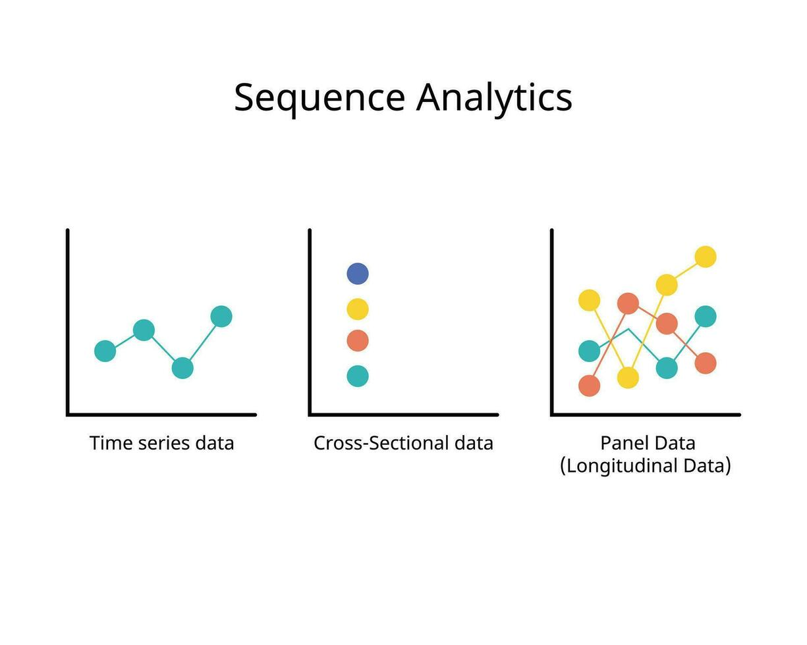

Introduction & EViews : prise en main
L’économétrie est une méthode d’analyse des données des phénomènes économiques qui, par l’utilisation de la statistique et des mathématiques, établit des corrélations entre les variables.
Objectifs :
▶ Tester la véracité empirique d’une théorie
▶ Prévoir l’évolution d’un phénomène
▶ Calculer la valeur de paramètres des modèles théoriques
Corrélation n’est pas synonyme de causalité, or l’économétrie ne mesure que des corrélations!
Note
Preuve, ce site web (cliquer si temps disponible)
Principe : Vous disposez d’une variable à expliquer (le nombre de buts) et d’une [ou plusieurs] variable[s] explicative[s] (poste du joueur, taille, club) et vous essayez de savoir s’il existe une relation entre celles-ci.
Tip
Avec un apport théorique préalable, une corrélation peut être suspectée de causale.
Cours:
▶ Présentation des concepts en CM (M. Brun)
▶ Mise en pratique sur EViews en TD
Nos séances de TD :
▶ TD 1 : Présentation et prise en main d’EViews
▶ TD 2 : Gestion et explorations de la base de données
▶ TD 3 : Modèle linéaire (MCO) et conditions de validité.
▶ TD 4 : Tests usuels : homoscédasticité (Goldfeld–Quandt, Breusch–Pagan, White) et corrections pour l’hétéroscédasticité (White).
▶ TD 5 : Séries temporelles : autocorrélation (Durbin–Watson, Breusch–Godfrey) et sa correction (Cochrane–Orcutt), test COMFAC.
▶ TD 6 :Variables instrumentales (2SLS) : identification, exogénéité et instrumentation (test de Hausman — principe Nakamura & Nakamura).
▶ TD 7 : Variables instrumentales (2SLS) : suite et sur-identification (test de Sargan)
▶ TD 8: Normalité des erreurs : normalité (Jarque–Bera).
Les données utilisées en économétrie sont de trois types :
1. Données transversales :
Données sur plusieurs individus à un instant donné
2. Données temporelles :
Données sur un seul individu à des périodes différentes
3. Données de panel :
Données enregistrées pour différents individus à différentes périodes

Important
Dans le cadre de ce cours, nous travaillerons uniquement sur des données transversales.
EViews est un logiciel développé par Quantitative Micro Software
Il existe de nombreux autres logiciels d’économétrie.
Avantages d’EViews :
▶ Simple d’utilisation (fonctionnement avec une interface)
▶ Performant pour les séries temporelles
Inconvénients :
▶ Il s’agit uniquement d’un logiciel d’économétrie
La traitement de données doit être fait au préalable
▶ Peu flexible
Trois manières de travailler sous EViews :
1. Par l’interface graphique
2. En rentrant le nom de la commande dans la fenêtre de commande
3. En regroupant les commandes dans un programme
Important
Dans le cadre de ce cours, nous utiliserons les deux premières méthodes
Un objet est un élément stockant différents types d’informations, rassemblés dans le workfile.
Double-cliquer sur l’icône pour l’ouvrir.
Objets les plus fréquents :
Variables numériques
Liste d’éléments en texte
Équation
Graphique
Coefficients et résidus estimés
Scalaire et matrices
Première étape avant d’importer une base de données.
Menu : File → New → Workfile
Trois structures possibles :
Noms des paramètres:
Modules optionnels :
Name : nom du workfile
Page : numéro de page
Sauvegarde :
Première sauvegarde :
File → Save as - Ensuite : File → Save ou Ctrl+S
Ouvrir un workfile existant :
File → Open → Workfile →Choisir le fichier à ouvrir
Caution
Préalable : Seules les données sont acceptées (le fichier Excel ne doit pas contenir de formules).
Procédure:
Une première fenêtre s’ouvre :
Predefined Range : aucun changement
Custom range : pour modifier la feuille, la première et la dernière cellule
Puis une deuxième fenêtre permet de modifier :
Nb de lignes définissant le statut (Column headers)
Nom et type des variables et leurs labels (Column info)
Une troisième fenêtre offre des opérations plus complexes (lier différentes bases de données).
Terminer puis sauvegarder le workfile (File → Save ou Ctrl+S).
Possible via : File → Open → Foreign Data as Workfile
Avantage :
Inconvénient :
Question : Comment créer un workfile pour accueillir des données transversales dans EViews ?
Question : Quelle est la procédure pour importer un fichier Excel dans EViews ?
TD1.xls.Question : Quelles sont les trois grandes catégories de données ?
Question : La corrélation implique-t-elle une causalité ?
Non.
- Corrélation : deux variables évoluent ensemble.
- Causalité : une variable provoque l’évolution de l’autre.
Exemple : Fumer ↦ augmentation du risque de cancer du poumon.
Question : Pourquoi Compagnie apparaît en texte et Public en yes/no ?
Compagnie : qualitative nominale (noms de compagnies).Public : binaire (oui/non) ⇒ à recoder en 0/1 si nécessaire.Question : Pourquoi la variable Compagnie apparaît en texte et la variable Public en yes/no ?
Compagnie : variable qualitative nominale (noms de compagnies).Public : variable binaire (oui/non) ⇒ à recoder en 0/1 si nécessaire.genr dummy_public = @recode(public="yes", 1, 0)
Question : Qu’est-ce qu’un paramètre en économie et que sont les variables explicatives en économétrie ?
Econométrie - L3